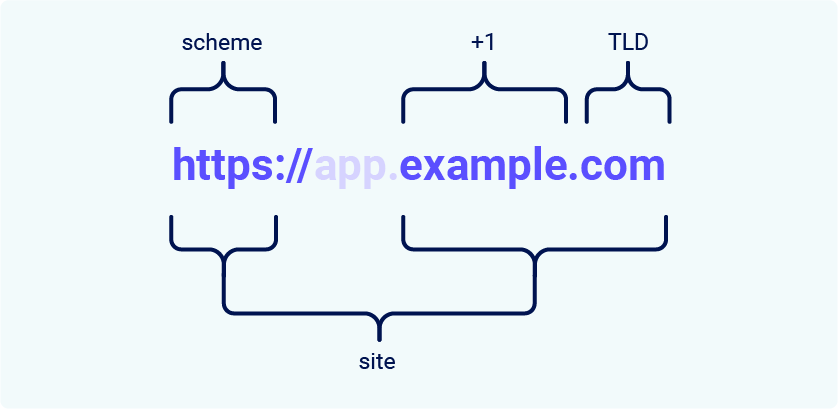
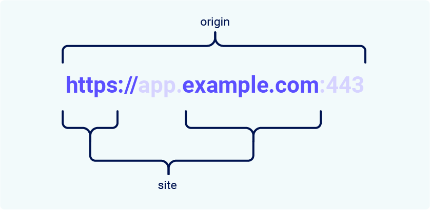

Bypassing SameSite cookie restrictions
SameSite is a browser security mechanism that determines when a website's cookies are included in requests originating from other websites. SameSite cookie restrictions provide partial protection against a variety of cross-site attacks, including CSRF, cross-site leaks, and some CORS exploits.
Since 2021, Chrome applies Lax SameSite restrictions by default if the website that issues the cookie doesn't explicitly set its own restriction level. This is a proposed standard, and we expect other major browsers to adopt this behavior in the future. As a result, it's essential to have solid grasp of how these restrictions work, as well as how they can potentially be bypassed, in order to thoroughly test for cross-site attack vectors.
In this section, we'll first cover how the SameSite mechanism works and clarify some of the related terminology. We'll then look at some of the most common ways you may be able to bypass these restrictions, enabling CSRF and other cross-site attacks on websites that may initially appear secure.
What is a site in the context of SameSite cookies?
In the context of SameSite cookie restrictions, a site is defined as the top-level domain (TLD), usually something like .com or .net, plus one additional level of the domain name. This is often referred to as the TLD+1.
When determining whether a request is same-site or not, the URL scheme is also taken into consideration. This means that a link from http://app.example.com to https://app.example.com is treated as cross-site by most browsers.

Note
You may come across the term "effective top-level domain" (eTLD). This is just a way of accounting for the reserved multipart suffixes that are treated as top-level domains in practice, such as .co.uk.
What's the difference between a site and an origin?
The difference between a site and an origin is their scope; a site encompasses multiple domain names, whereas an origin only includes one. Although they're closely related, it's important not to use the terms interchangeably as conflating the two can have serious security implications.
Two URLs are considered to have the same origin if they share the exact same scheme, domain name, and port. Although note that the port is often inferred from the scheme.

As you can see from this example, the term "site" is much less specific as it only accounts for the scheme and last part of the domain name. Crucially, this means that a cross-origin request can still be same-site, but not the other way around.
| Request from | Request to | Same-site? | Same-origin? |
https://example.com
|
https://example.com
|
Yes | Yes |
https://app.example.com
|
https://intranet.example.com
|
Yes | No: mismatched domain name |
https://example.com
|
https://example.com:8080
|
Yes | No: mismatched port |
https://example.com
|
https://example.co.uk
|
No: mismatched eTLD | No: mismatched domain name |
https://example.com
|
http://example.com
|
No: mismatched scheme | No: mismatched scheme |
This is an important distinction as it means that any vulnerability enabling arbitrary JavaScript execution can be abused to bypass site-based defenses on other domains belonging to the same site. We'll see an example of this in one of the labs later.
How does SameSite work?
Before the SameSite mechanism was introduced, browsers sent cookies in every request to the domain that issued them, even if the request was triggered by an unrelated third-party website. SameSite works by enabling browsers and website owners to limit which cross-site requests, if any, should include specific cookies. This can help to reduce users' exposure to CSRF attacks, which induce the victim's browser to issue a request that triggers a harmful action on the vulnerable website. As these requests typically require a cookie associated with the victim's authenticated session, the attack will fail if the browser doesn't include this.
All major browsers currently support the following SameSite restriction levels:
Developers can manually configure a restriction level for each cookie they set, giving them more control over when these cookies are used. To do this, they just have to include the SameSite attribute in the Set-Cookie response header, along with their preferred value:
Set-Cookie: session=0F8tgdOhi9ynR1M9wa3ODa; SameSite=StrictAlthough this offers some protection against CSRF attacks, none of these restrictions provide guaranteed immunity, as we'll demonstrate using deliberately vulnerable, interactive labs later in this section.
Note
If the website issuing the cookie doesn't explicitly set a SameSite attribute, Chrome automatically applies Lax restrictions by default. This means that the cookie is only sent in cross-site requests that meet specific criteria, even though the developers never configured this behavior. As this is a proposed new standard, we expect other major browsers to adopt this behavior in future.
Strict
If a cookie is set with the SameSite=Strict attribute, browsers will not send it in any cross-site requests. In simple terms, this means that if the target site for the request does not match the site currently shown in the browser's address bar, it will not include the cookie.
This is recommended when setting cookies that enable the bearer to modify data or perform other sensitive actions, such as accessing specific pages that are only available to authenticated users.
Although this is the most secure option, it can negatively impact the user experience in cases where cross-site functionality is desirable.
Lax
Lax SameSite restrictions mean that browsers will send the cookie in cross-site requests, but only if both of the following conditions are met:
-
The request uses the
GETmethod. -
The request resulted from a top-level navigation by the user, such as clicking on a link.
This means that the cookie is not included in cross-site POST requests, for example. As POST requests are generally used to perform actions that modify data or state (at least according to best practice), they are much more likely to be the target of CSRF attacks.
Likewise, the cookie is not included in background requests, such as those initiated by scripts, iframes, or references to images and other resources.
None
If a cookie is set with the SameSite=None attribute, this effectively disables SameSite restrictions altogether, regardless of the browser. As a result, browsers will send this cookie in all requests to the site that issued it, even those that were triggered by completely unrelated third-party sites.
With the exception of Chrome, this is the default behavior used by major browsers if no SameSite attribute is provided when setting the cookie.
There are legitimate reasons for disabling SameSite, such as when the cookie is intended to be used from a third-party context and doesn't grant the bearer access to any sensitive data or functionality. Tracking cookies are a typical example.
If you encounter a cookie set with SameSite=None or with no explicit restrictions, it's worth investigating whether it's of any use. When the "Lax-by-default" behavior was first adopted by Chrome, this had the side-effect of breaking a lot of existing web functionality. As a quick workaround, some websites have opted to simply disable SameSite restrictions on all cookies, including potentially sensitive ones.
When setting a cookie with SameSite=None, the website must also include the Secure attribute, which ensures that the cookie is only sent in encrypted messages over HTTPS. Otherwise, browsers will reject the cookie and it won't be set.
Set-Cookie: trackingId=0F8tgdOhi9ynR1M9wa3ODa; SameSite=None; SecureBypassing SameSite Lax restrictions using GET requests
In practice, servers aren't always fussy about whether they receive a GET or POST request to a given endpoint, even those that are expecting a form submission. If they also use Lax restrictions for their session cookies, either explicitly or due to the browser default, you may still be able to perform a CSRF attack by eliciting a GET request from the victim's browser.
As long as the request involves a top-level navigation, the browser will still include the victim's session cookie. The following is one of the simplest approaches to launching such an attack:
<script>
document.location = 'https://vulnerable-website.com/account/transfer-payment?recipient=hacker&amount=1000000';
</script>
Even if an ordinary GET request isn't allowed, some frameworks provide ways of overriding the method specified in the request line. For example, Symfony supports the _method parameter in forms, which takes precedence over the normal method for routing purposes:
<form action="https://vulnerable-website.com/account/transfer-payment" method="POST">
<input type="hidden" name="_method" value="GET">
<input type="hidden" name="recipient" value="hacker">
<input type="hidden" name="amount" value="1000000">
</form>Other frameworks support a variety of similar parameters.
Bypassing SameSite restrictions using on-site gadgets
If a cookie is set with the SameSite=Strict attribute, browsers won't include it in any cross-site requests. You may be able to get around this limitation if you can find a gadget that results in a secondary request within the same site.
One possible gadget is a client-side redirect that dynamically constructs the redirection target using attacker-controllable input like URL parameters. For some examples, see our materials on DOM-based open redirection.
As far as browsers are concerned, these client-side redirects aren't really redirects at all; the resulting request is just treated as an ordinary, standalone request. Most importantly, this is a same-site request and, as such, will include all cookies related to the site, regardless of any restrictions that are in place.
If you can manipulate this gadget to elicit a malicious secondary request, this can enable you to bypass any SameSite cookie restrictions completely.
Note that the equivalent attack is not possible with server-side redirects. In this case, browsers recognize that the request to follow the redirect resulted from a cross-site request initially, so they still apply the appropriate cookie restrictions.
Bypassing SameSite restrictions via vulnerable sibling domains
Whether you're testing someone else's website or trying to secure your own, it's essential to keep in mind that a request can still be same-site even if it's issued cross-origin.
Make sure you thoroughly audit all of the available attack surface, including any sibling domains. In particular, vulnerabilities that enable you to elicit an arbitrary secondary request, such as XSS, can compromise site-based defenses completely, exposing all of the site's domains to cross-site attacks.
In addition to classic CSRF, don't forget that if the target website supports WebSockets, this functionality might be vulnerable to cross-site WebSocket hijacking (CSWSH), which is essentially just a CSRF attack targeting a WebSocket handshake. For more details, see our topic on WebSocket vulnerabilities.
Bypassing SameSite Lax restrictions with newly issued cookies
Cookies with Lax SameSite restrictions aren't normally sent in any cross-site POST requests, but there are some exceptions.
As mentioned earlier, if a website doesn't include a SameSite attribute when setting a cookie, Chrome automatically applies Lax restrictions by default. However, to avoid breaking single sign-on (SSO) mechanisms, it doesn't actually enforce these restrictions for the first 120 seconds on top-level POST requests. As a result, there is a two-minute window in which users may be susceptible to cross-site attacks.
Note
This two-minute window does not apply to cookies that were explicitly set with the SameSite=Lax attribute.
It's somewhat impractical to try timing the attack to fall within this short window. On the other hand, if you can find a gadget on the site that enables you to force the victim to be issued a new session cookie, you can preemptively refresh their cookie before following up with the main attack. For example, completing an OAuth-based login flow may result in a new session each time as the OAuth service doesn't necessarily know whether the user is still logged in to the target site.
Alternatively, you can trigger the cookie refresh from a new tab so the browser doesn't leave the page before you're able to deliver the final attack. A minor snag with this approach is that browsers block popup tabs unless they're opened via a manual interaction. For example, the following popup will be blocked by the browser by default:
window.open('https://vulnerable-website.com/login/sso');
To get around this, you can wrap the statement in an onclick event handler as follows:
window.onclick = () => {
window.open('https://vulnerable-website.com/login/sso');
}
This way, the window.open() method is only invoked when the user clicks somewhere on the page.